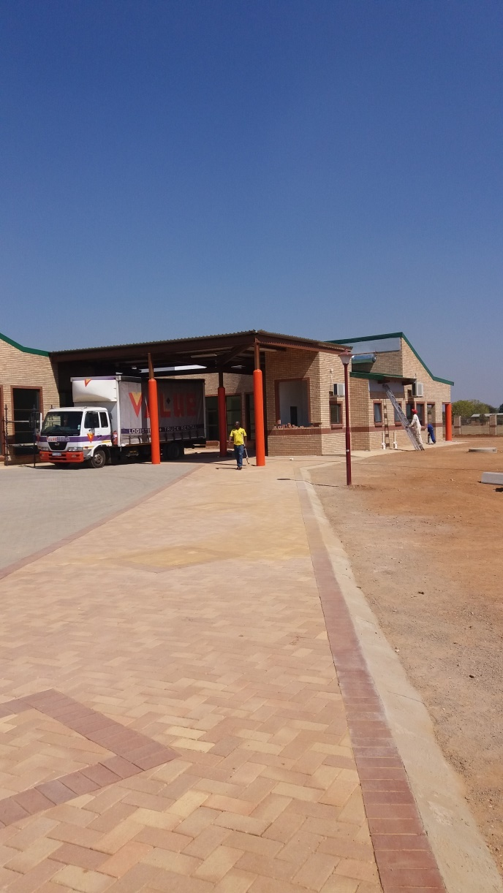
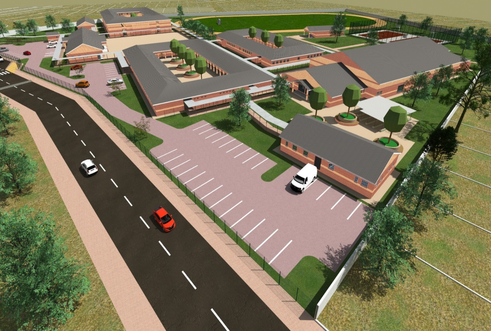
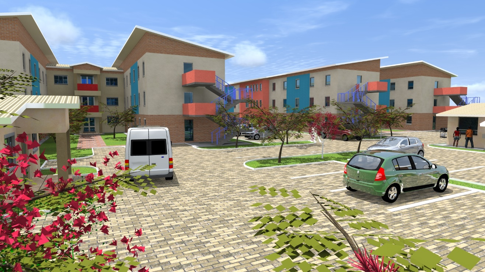

Construction Services
Roofing & Roof Structures.
Roofing and roof-structure work, including roof installation and construction-stage coordination.




Roofing and roof-structure work, including roof installation and construction-stage coordination.


